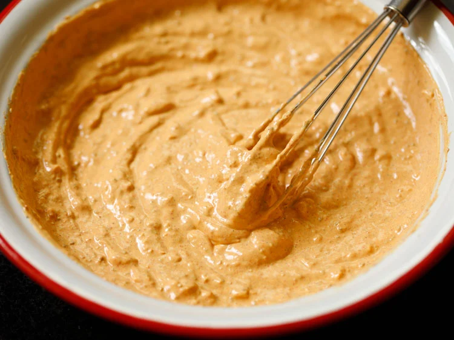

Paneer Tikka Recipe (Tandoori Paneer Starter Snack)
Paneer Tikka is a popular and delicious tandoori starter and snack where Paneer (Indian cottage cheese cubes) are marinated in a spiced yogurt-based marinade, arranged on skewers and grilled in the oven. Worry not if you don’t have an oven – instead of grilling in oven, you can make Tandoori Paneer Tikka Recipe on stovetop on a tawa/skillet. In this post I am sharing both the oven and stovetop methods.

How to make Paneer Tikka – Restaurant Style
1. Peel, rinse and dice 1 medium-sized onion in square shaped 1 to 1.5 inches pieces. Rinse and slice 1 small to medium sized capsicum (green bell pepper) in 1 to 1.5 inches pieces.
You will need ½ cup each of onions and capsicum. Set these aside. You can also use tomatoes if you want.
2. Crush 1.5 inches ginger and 6 to 7 small to medium sized garlic to a fine paste in a mortar-pestle.
You will need 1 tablespoon of crushed ginger-garlic or 1 tablespoon of ready ginger-garlic paste.
3. Slice 200 to 250 grams block or paneer into cubes or squares and keep aside. Best is to use homemade paneer.
Make Tikka Marinade
4. Put 200 grams hung curd (greek yogurt) in a bowl. With a whisk beat the curd lightly till smooth.
5. Now add 1 tablespoons ginger garlic paste or 1 tablespoon crushed ginger garlic to the curd. Also add all the dry spice powders. Below you see the following Indian spice powders in clockwise order:
*2 teaspoons kashmiri red chili powder
*1 teaspoon coriander powder
*½ teaspoon turmeric powder
*½ teaspoon garam masala powder
*1 teaspoon cumin powder
*1 teaspoon dry mango powder (amchur)
*1 teaspoon ajwain (carom seeds)
*1 teaspoon chaat masala
*½ teaspoon black pepper powder (optional)
Kashmiri red chili powder gives a nice red color to the food but is not spicy and hot.
Instead of kashmiri red chilli powder, you can add 2 teaspoons of sweet paprika or ½ to 1 teaspoon of cayenne pepper.
6. Add ½ teaspoon black salt and regular salt as per taste. If you do not have black salt, then skip it.
7. Add ½ tablespoon (1.5 teaspoons) lemon juice.
8. Next add 1 tablespoon mustard oil. If you do not have mustard oil, then use a neutral tasting oil.
9. Mix very well. Check the taste and add more seasonings if required.
10. Add the onions, capsicum and paneer to the marinade.
11. Slowly and gently mix them with the marinade. Cover and keep the marinated paneer and veggies in the refrigerator for 2 hours or more.
12. This is how they look after 2 hours.
Assemble and Grill
13. Begin to thread the veggies and paneer alternately on bamboo skewers. Before you begin to thread preheat oven at 230 or 240 degrees Celsius or 464 degree Fahrenheit for 15 to 20 minutes.
Use only the top heating element while preheating as well as grilling. Soak or rinse the bamboo skewers before threading.
14. Place them on a tray lined with aluminium foil or parchment paper.
15. Brush with some oil all over.
16. Place the tray on the top rack and grill in the preheated oven for 7 to 10 minutes first at 230 to 240 degrees Celsius or 464 degrees Fahrenheit.
17. Then remove the tray from the oven and turn the paneer tikka skewers.
18. Again keep back on the top rack in the oven and continue to grill till the edges of paneer and veggies are golden or slightly charred for about 3 to 5 minutes.
Do not grill for a long time as then paneer becomes hard. Since temperatures vary from oven to oven do keep a check.
You can reduce or increase the time as required. Total grilling time will be 15 to 20 minutes.
19. Remove once done. Serve the paneer tikka sprinkled with some chaat masala and lemon juice. Also serve mint chutney, onion slices and lemon wedges as sides.

Prepare The Tikka Base
1. First whisk 2.25 cups of thick curd or hung curd till smooth in a bowl or pan.
2. Add all the spices and herbs including besan (gram flour) & salt.
*4 tablespoon besan (gram flour)
*½ teaspoon turmeric powder (ground turmeric)
*½ teaspoon black pepper powder
*½ teaspoon carom seeds (ajwain)
*½ teaspoon caraway seeds (shahjeera)
*½ teaspoon crushed kasuri methi (dry fenugreek leaves)
*1 teaspoon coriander powder (ground coriander)
*1 teaspoon cumin powder (ground cumin)
*1 teaspoon garam masala powder
*1 teaspoon dry mango powder
*2 teaspoon Kashmiri red chili powder
*¾ tablespoon ginger garlic paste
*¾ teaspoon regular salt or edible rock salt or add as required.
3. Stir and mix well.
Marinate Ingredients
4. Add the diced vegetables – 1 medium to large bell pepper/capsicum, 1 medium to large tomato and 1 medium to large onion. Also add 250 to 300 grams paneer slices.
5. With your hands or spoon mix very well so that the marinade coats the paneer and veggies evenly.
6. Cover the bowl and keep the marinade in the fridge for 45 minutes to 3 hours. You can also keep overnight. The below photo is of the marinated paneer and veggies after 1 hour.
Pan Fry
7. Heat 1 tbsp oil in a non stick pan/tawa or a well seasoned cast iron skillet. Coat the paneer and veggies with the marinade and place them on the tawa.
You can fry at a low heat or medium heat. I fried in 3 batches and overall used about 3 tbsp oil.
Another way is to skewer the paneer, veggies and then fry them. I chose to fry them directly as they get fried evenly and the texture is better.
8. When one side gets browned, gently lift and turn over. The paneer cubes will get cooked faster than the veggies.
So remember to remove the paneer cubes as soon as they are golden. You can char or brown the veggies more.
For the vegetables, you have to make sure the marinade on them gets cooked. So lightly press them while cooking.
If you want you can fry the paneer cubes first and then the marinated vegetables. Pan fry all till they become golden.
9. Remove paneer tikka on a plate. I have not removed them on paper tissues, as due to heat and moisture from the paneer cubes, they stick to the paper tissues.
10. While still hot, then skewer the fried paneer cubes and veggies on to a wooden skewer or toothpick.
You can also have this paneer tikka straight away without skewering. Sprinkle 1 teaspoon chaat masala and ¾ teaspoon lemon juice on the paneer cubes while serving.
11. Arrange them in a serving plate and serve the paneer tikka hot or warm with onion lemon salad or mint chutney.